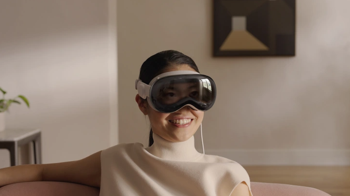

Did you just acquire the new Ultrahand ability in The Legend of Zelda: Tears of the Kingdom but still don't know how to use it properly even after following the in-game tutorials? Well, then this is the blog for you! In today's blog, I'll be explaining some neat tips and tricks in order to maximize your efficiency while using the Ultrahand ability.
The biggest tip to improving your efficiency with the Ultrahand ability is by mastering its controls. To start, you most likely already know that you press the left bumper in order to select and activate the Ultrahand ability and that you can use the right thumbstick to move the selected object up, down, left, and right around Link. But, did you also know that you can use the up and down buttons on the d-pad in order to move the object further or closer to you? That means that you can build machines while being in an advantageous position a couple of meters away in order to make the building process easier! Another hidden tip is that your controller's gyro sensors can allow you to have even greater control over where you are placing your selected object. Simply rotate your controller any direction while holding onto an object to move it around in the direction that you just moved your controller! This allows you to have greater control over where an object is placed compared to using just the right thumbstick. The last control tip is that by holding down the right bumper you can rotate an object clockwise or counter-clockwise and forwards or backwards from the camera. This allows you to rotate object in any direction at 45 degree increments which will be great if you are trying to make some advance machines or rotating a wheel around!
Well folks, that's all I have for today's blog. I hope you learned something new and I can't wait to see what you all make with your newfound skills!
Apple's Vision Pro XR Headset: Is it Worth the Money?
Breaking News: A couple of hours ago Apple revealed their debut XR headset, the Vision Pro. This blog will explain what the headset is and whether or not it is worth the $3,500 price tag (spoilers, it isn't).

Let me start by explaining what the headset itself is. The Apple Vision Pro is an XR (can do VR and AR content) headset that a user wears in order to immerse themselves in special experiences. It features eye tracking which allows users to look at content and "click" on it by tapping their fingers together. This eye tracking also allows the user's eyes to appear on the outside of the headset via a hidden display on the front. This is called EyeVision (I don't know why they didn't call it IVision) and this is pictured in the above photo. Who knows how much this fancy front-facing display is adding to the price of this expensive product and how much it is wearing down on the device's 2-hour battery life (yeah, that's right. This headset can only last for two hours when not plugged into a Mac). Ignoring the creepiness of EyeVision and how we will most likely be laid off from our jobs in the future by someone wearing this goofy device, I believe that I should now get to the main selling point of this device.
Let's see here... hmmmm... it appears that the main selling point of this device is that you can have virtual monitors that mirror a screen and that you can watch movies in the dark anywhere in your house (like on the toilet :P ). That's it. Now instead of having the tactile feedback of a $30 mouse and keyboard with an $80 display on your desk, you can do the same thing with a virtual keyboard, mouse, and monitor for the low price $3,500. You can also only do those activities for 2 hours at a time though due to the battery life but no worries, you can always plug it into your Mac! But, if you don't have a mac then sorry bro, this headset isn't for you.
But, hearing just my opinion isn't good for a discussion so I even collected some data about what other people think about this headset. Here is the data below.
Individual
Would you buy it?
Explain your Choice
Dad Kleinbriel
No
This thing is over $3000 and my free laptop from work has more features than this crap.
Mom Kleinbriel
No
Why would I get this to watch movies if I can only watch the movies alone? Plus, if I wanted to watch movies in a dark environment I would just turn off the lights and close the blinds on the windows.
Brother Kleinbriel
No
I can't wait to wear this scuba-diver mask in public and get robbed.
Thor Kleinbriel
Woof!
Bark! Bark! Woof! Woof! Grrrrr... Woof Woof!
Alright, I'll get back to being serious now. All in all, I don't see any reason to own this headset. The features it has and "invented" (outside of EyeVision) have already existed for years and they are all in other vr headsets like the Meta Quest 2, Quest 3, and Quest Pro and other than the pro, the two Quest headsets are both cheaper than $500 and not only can they do the same virtual environments but they can also play vr games as well which the Apple Vision Pro can't do. So, this headset will make some Apple fanboys/fangirls happy and make them sell one of their kidneys in order to get it. That's all from me, Mike signing out.